What’s That? is a simple Chrome Extension for refining WhatsApp Messages if you use web.whatsapp.com. This extension will change the data to be more readable. In sent or received messages actual data won’t be affected. It can help you in 2 ways:
1 - Answer Questions Like:
2 - Filtering & Converting harsh or cuss words like shit, bastard, hell to *** for Chat Sanitization & Better Readability.
Open your WhatsApp account with web.whatsapp.com. If you added our extension successfully then you will see a green filter button floating in the bottom right side of the screen:
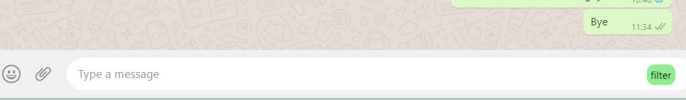You can drag the button and can place it to the a comfortable location:
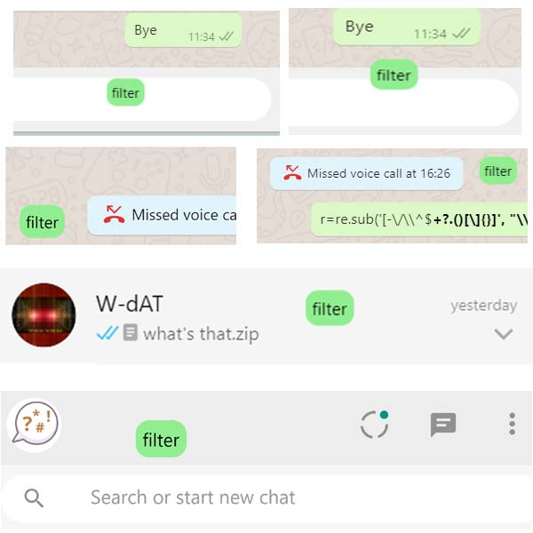Try to write some Acronym like “lol”, “asap”, “ttyl”, “idk” in the chat bar:
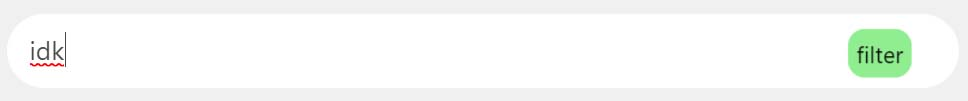Now Click on the “filter” button to see the effects – It will unfold the acronym:
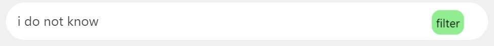You can also try to write cuss word like “shit”:
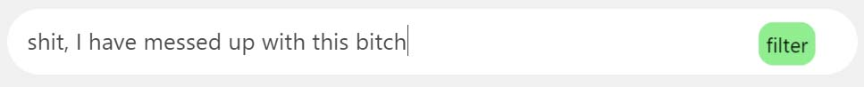Now Click the “filter” button to see the effects – It will refine the word to *** (set of asterisks):
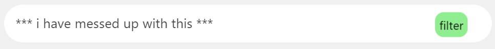You can still use our extension when the message is being sent or received already. It will work as fine as before. To do that you have to go to the extension icon on the top right corner of your browser. You will see an extension icon. Just click it to see all of your extension list.
Now try to find our extension from that list:
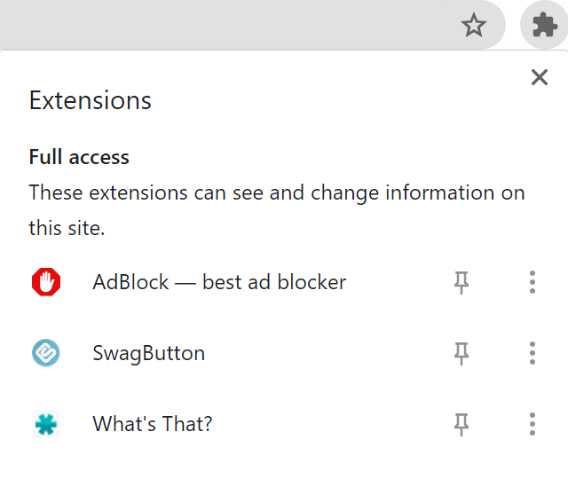Click on it & you will see a small window:
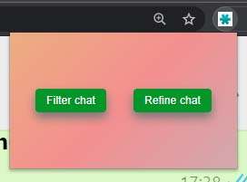Send some cuss words like shit, bastard:
Now try to write any Acronym like lol, asap and send it:
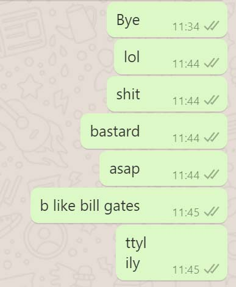Now click the filter button there on the top window & see the effects:
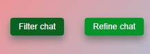 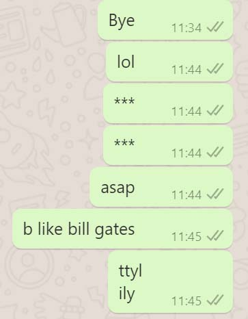Now click on Refine Chat button there on the top window to see the changes:
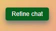 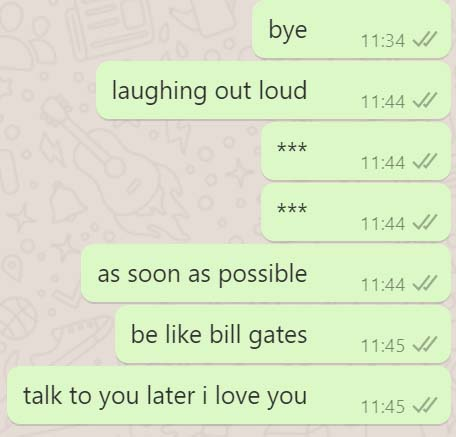You can add your own cuss words or slangs with our extension. To do that first click the extension icon. Go to our extension, right click and click Options:
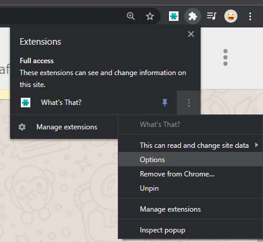Add any cuss word of your wish:
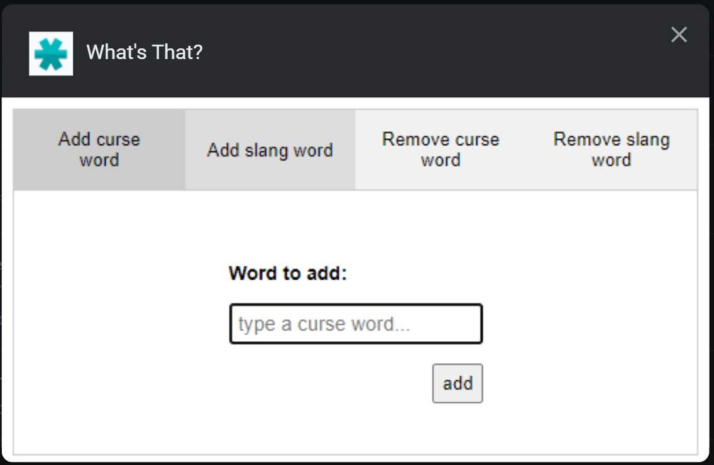 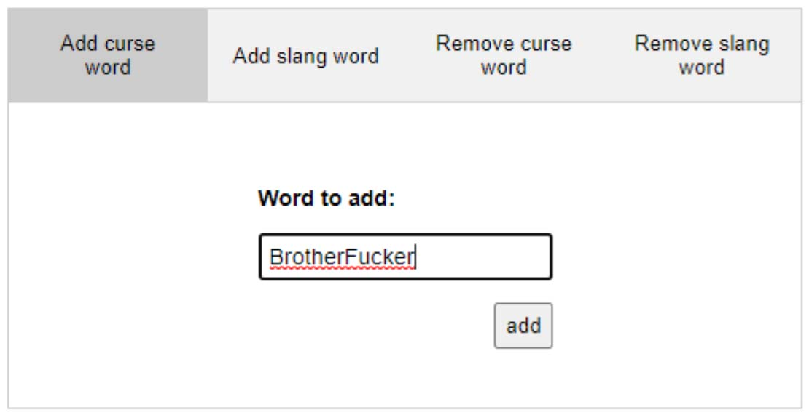Remove any cuss word of your wish:
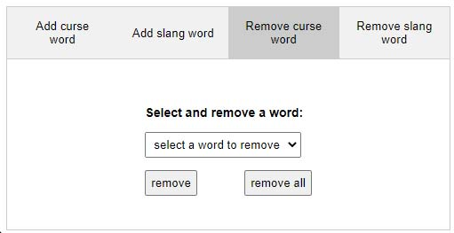 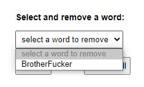Add any slang word of your wish:
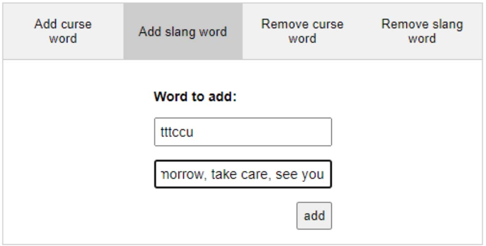Remove any slang word of your wish:
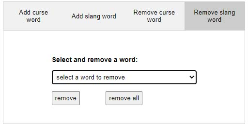 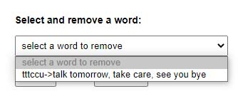